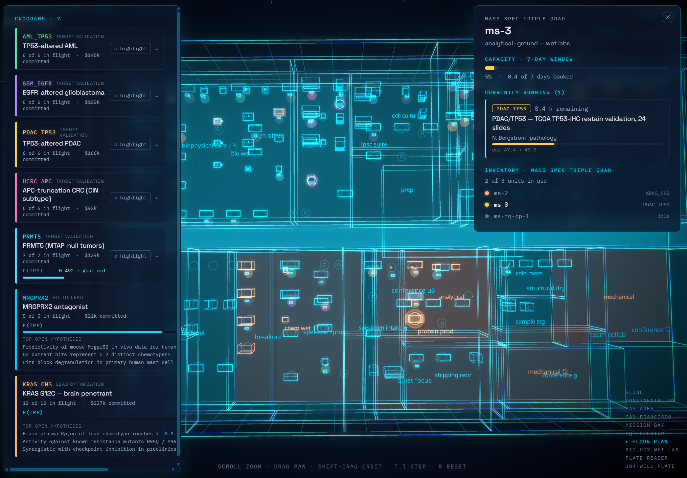

01 · The landscape
We are entering the golden age of tech-enabled drug discovery.
Three pillars are flourishing at once: scaled perturbation, predictive models, and patient data. What once required dedicated, decade-long infrastructure programs is now often freely accessible, buildable, outsourceable, or licensable.
perturbation
data
02 · The gap
Technology for generating ideas is far outpacing technology for advancing programs.
Models and platforms produce hypotheses faster than any organization can prosecute them. The bottleneck is designing and executing the program-decisive experiment, and that step is loaded with human latency.
Lab-in-the-loop suffers two backpropagation problems.
(1) Return loop speed
(2) Outcome impact
The dilemma
Speed or decisiveness. Today, you pick one.
Scaled platforms run the fast loop (data → model → cheap experiment → data). The decisive loop (model → hypothesis → bespoke experiment) doesn’t scale, and that’s the loop that advances programs.
Adapt scaled discovery platforms for validation
- In vitro DMPK
- Established binding assays
- High-dimensional readouts in platform lines
- Library-based synthesis
Run the specific decisive experiments for the program
- Specific context
- Patient tissue
- Hypothesis-driven synthesis
- Patient-specific signal
03 · What we own
The new moat is outcomes. The new model is execution.
Rebuild the entire discovery suite to complement the agentic revolution.
- Rapidly build a high-impact, deeply-validated portfolio through simulation-optimized execution and zero-latency decision-making.
- Pre-modeled spend. No strategy is set and no purchase executed without the simulation first running it.
-
Prospectively model strategic decisions and technological advancement.
Live what-ifsa. What if we add humanoid robots?b. What if we license additional patient data?c. What if binding prediction was 50% better?
We will stand on the shoulders of giants.
Ample opportunity exists to benefit from massive innovation in data production and model development, directly or via licensing. We absorb the giants. We do not compete with them.
04 · The bet
Running the most informative experiments is solvable through coupled simulations.
The latency around running specific, program-decisive experiments comes from two human-bound steps: enumerating the right experiments and executing them across a moving resource map. Both can be solved by simulation, if the right two simulations are coupled.
05 · The architecture
Dual-simulation hybridization. Maximize decisions, minimize latency.
A next-generation digital twin of operations, fused with an outcomes simulation. The twin prices every candidate experiment in current resource state; outcomes ranks them by impact. One loop. Many more decisions per unit time.

liveAccurate reflection of real-world resource use, and an instant simulator of prospective use or change. Every CRO, instrument, room, and person is a node.
Twin prices each candidate. Outcomes ranks them. Same loop, decisions arrive sooner.
Every candidate experiment is projected across the program’s belief network and scored by expected impact on TPP.
06 · Outcomes
Future-ready build.
High program parallelization is achievable, with increasing decision rate and impact as technology advances.
Catalogue & external execution
Catalogue of publicly available and strategically-licensed data established. 20 parallel programs running with dominantly external execution at maximum predicted efficiency. Agents self-heal and self-propose viable improvement.
HQ + decision velocity
HQ complete with on-site compute and experimental support for what is modeled to most benefit from zero-latency support. High-resolution event tracking, prospective decision-loading and change modeling established. 4 programs at in vivo PoC. Synthesis demand peaks.
Robotics & precision
Adaptive humanoid / alternative robotics introduced for high-tedium and high-dexterity experimental work. Program steady-state achieved at 40 parallel programs. Synthesis demand decreases due to precision hypothesis testing.
07 · Tracking
Simulation is the solution to lagging indicators.
Every decision at every moment is measured against well-informed models of industry expectations and our own predictions. Projected duration vs. realized. Predicted success vs. realized. The system learns to forecast itself.
Instant milestone timeline & confidence updates
Each program carries a live confidence interval on its next stage gate. The number doesn’t wait for a quarterly review. It moves the moment new evidence lands.
The simulation forecasts itself
- Time prediction, recalibrated each cycle
- Execution success prediction, per node and per novelty class
08 · What it implies
Spend / allocation, sized for the wave.
If the technology moves the way we think, the operating model has to follow. Inputs get cheaper. Chemistry shifts from library- to hypothesis-driven. Machine reasoning replaces generalist domain knowledge. The org adapts to match.
- Data & models are becoming increasingly easy to produce, outsource, or license.
- Every improvement in chemistry models shifts synthesis from library-driven to hypothesis-driven.
- Machine reasoning is replacing generalist domain knowledge, and enabling creative build.
- Hands-on bio & chem expertise is too valuable to sequester to individual program leadership.
- Procurement and CRO negotiation become proportionally more impactful.
- Data science & computational biology are accessible to anyone with core stats understanding.
Manifest Discovery